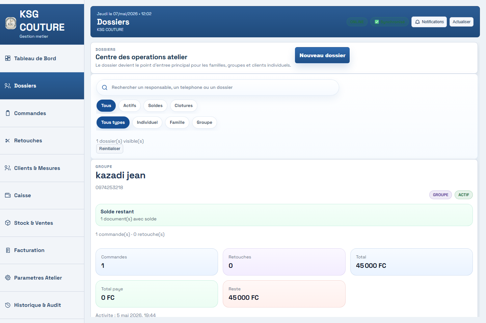
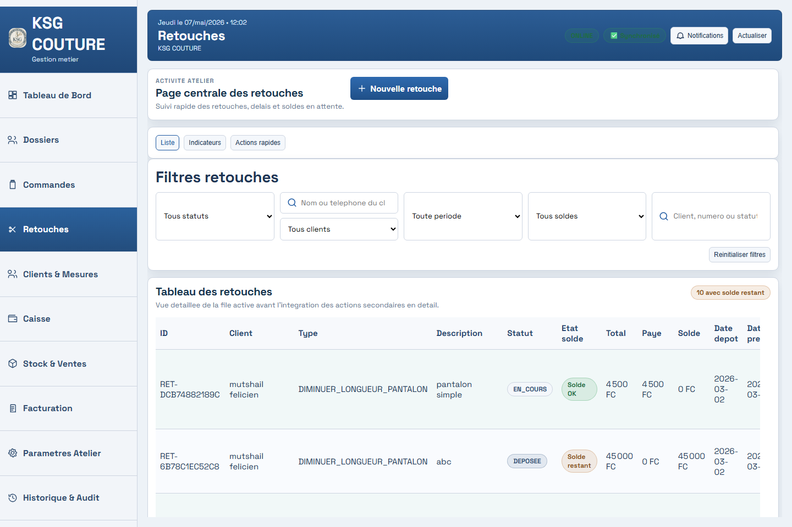
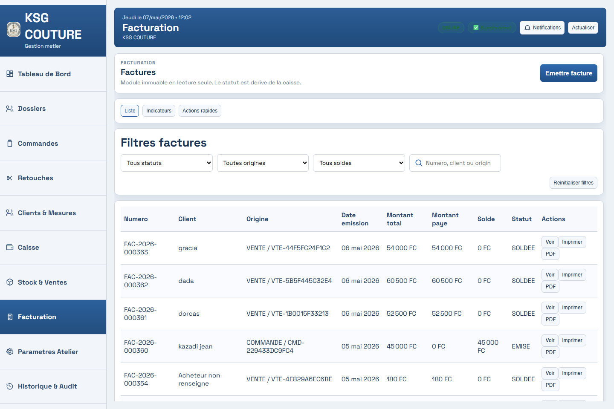
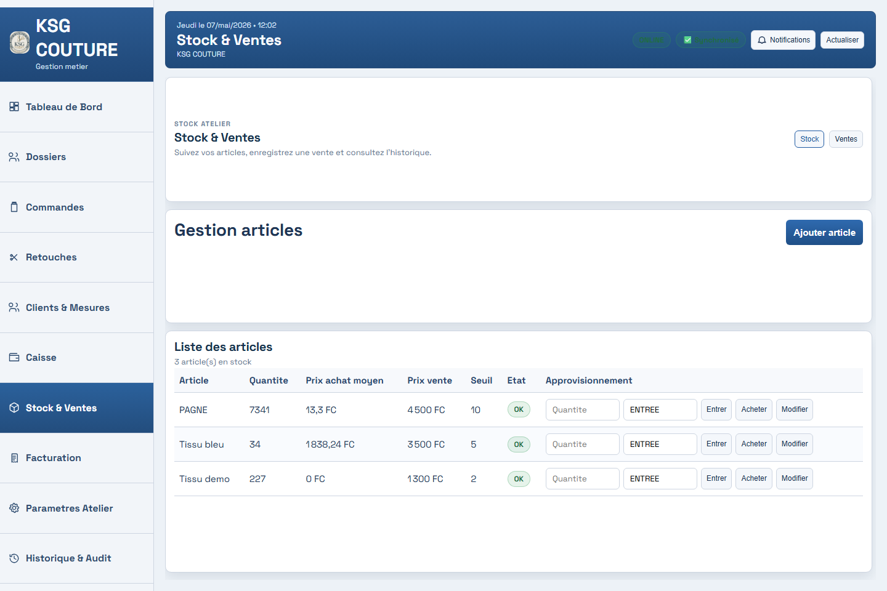

Produit phare VolcanoTech
Atelier Pro, la gestion d’atelier couture en mode premium.
Centralisez les commandes, retouches, clients, paiements et tableaux de bord dans un outil moderne, mobile-first et pensé pour fonctionner hors ligne.
Commandes
Caisse
Offline-first
Fonctionnalités
Tout ce qu’un atelier doit suivre, dans une interface simple.
Atelier Pro transforme les tâches quotidiennes en processus clairs : chaque commande, paiement et retouche devient plus facile à suivre.
Commandes
Retouches
Caisse
Synchronisation
Tableaux de bord
Mobile-first
Offline-first
Workflow atelier
De la commande à la livraison, tout reste visible.
Atelier Pro aide le responsable à suivre chaque étape importante sans carnet dispersé, sans oubli et sans confusion dans la caisse.
Créer la commande
Enregistrez le client, les mesures, les articles, les avances et les délais.
Suivre le travail
Visualisez les commandes en cours, les retouches et les priorités de la journée.
Encaisser proprement
Gardez une trace claire des paiements, avances, soldes et mouvements de caisse.
Piloter l’activité
Consultez les tableaux de bord pour prendre de meilleures décisions rapidement.
Captures du produit
Une interface complète pour gérer l’atelier au quotidien.
Les écrans clés d’Atelier Pro montrent le suivi des commandes, dossiers clients, retouches, caisse, facturation et stock.




Impact métier
Un outil pensé pour les vrais problèmes des ateliers.
Atelier Pro ne cherche pas à compliquer la gestion. Il remplace les oublis, les papiers dispersés et les comptes difficiles à suivre par une interface claire, moderne et exploitable chaque jour.
Pourquoi Atelier Pro
Conçu pour les ateliers qui veulent mieux s’organiser sans complexité.
Moins de pertes
Les commandes, avances et livraisons sont centralisées au même endroit.
Meilleur suivi
Chaque retouche ou commande peut être suivie avec des statuts clairs.
Hors ligne
L’atelier peut continuer à travailler même quand la connexion est faible.
Tableaux de bord
Le responsable garde une vue claire sur l’activité, la caisse et les délais.
Démonstration
Voyez Atelier Pro en action.
Contactez VolcanoTech pour planifier une démo et vérifier si Atelier Pro correspond à votre atelier.